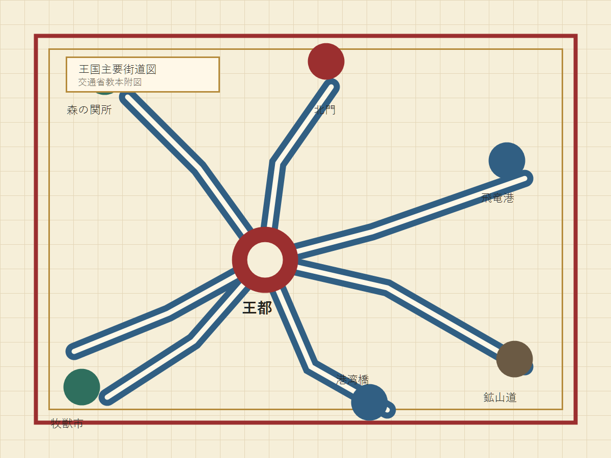

目的
この法律は、道路における危険を防止し、交通の安全と円滑を図り、もって公共の福祉に寄与することを目的とする。
王国免許取得者講習用 公式教材
魔導車、馬車、騎獣、飛竜、箒、ゴーレム運搬車が同じ道を使う時代のための交通規範。 法律を読むことで、王国の日常と秩序を知る。

道路交通法の目的は、交通の安全と円滑を図り、公共の福祉に寄与することである。
教材概要
オマドリア王国では、種族、魔法、魔物、召喚契約、飛行交通が日常の交通に深く関係する。 本教本は単なる暗記資料ではなく、運転者が王国の多様な生活者を予見し、保護し、円滑な通行を成立させるための基礎文書である。
条文検索
第一編 総則
初版では、教本と問題作成の核になる十五条を収録する。
この法律は、道路における危険を防止し、交通の安全と円滑を図り、もって公共の福祉に寄与することを目的とする。
道路とは、王国、領邦、自治都市または村落が公衆の通行に供する地上路、橋梁、地下道、港湾接続路および低空指定航路をいう。
車両等とは、魔導車、馬車、荷車、騎獣、箒、飛行具、ゴーレム運搬車その他道路を移動する用具または生物をいう。
運転者は、自己の操作、指揮、召喚または命令により移動する車両等の安全について責任を負う。召喚獣による牽引は召喚者の責任とする。
魔導車、飛竜、重量ゴーレム運搬車および旅客用大型馬車の運転には、普通免許のほか王令で定める特別免許を要する。
魔導機関を備える車両および公道を反復して通行する使役魔物は、交通省登録局の鑑札または紋章標識を掲げなければならない。
救急治癒車、消防水精車、王国騎士団の緊急車両および災害召喚隊は、警音、発光または公認念話標識により優先通行することができる。
運転中の詠唱、幻惑魔法、視界を遮る発光魔法および進路を変化させる浮遊魔法は、交通上やむを得ない場合を除き禁止する。
運転者は、種族による身長、視界、聴覚、歩行速度、日照耐性および夜間活動性の差異を予見し、安全な間隔を保持しなければならない。
交通事故により生命活動が停止した場合は死亡事故とする。ただし、登録済みアンデッドは死亡事故には該当せず、損壊事故として扱う。
野生魔物との接触時は危険回避を優先し、家畜または使役魔物との接触時は所有者確認を行う。保護対象魔物は王国自然庁へ通報すること。
スライムその他流動体の積荷は密閉容器で運搬し、漏出した場合は直ちに道路管理者へ届け出る。ただし調理済みのスライムはこの限りではない。
市街地における低空飛行は指定航路に限る。飛竜および箒は、地上信号と空路信号の双方に従わなければならない。
魔導車の所有者は、制動装置、灯火、魔導核、魔力漏出防止器および逆召喚停止具を定期に点検しなければならない。
道路標識、信号灯、浮遊標識、地響き予兆標および公認念話標識は、同一の効力を有する。相互に矛盾する場合は交通監督官の指示に従う。
該当する条文は見つかりませんでした。
第二編 通行者
同じ横断歩道を、低身長のドワーフ、日光を避けるアンデッド、急停止しにくいゴーレム、羽音の小さい妖精が利用する。 王国の運転者は、相手が自分と同じ速度、同じ視野、同じ反応を持つと仮定してはならない。
夜間は灯火へ接近する習性があるため、発光魔法の使用時は飛行横断に注意する。
停止命令から完全停止までに時間を要する。大型個体には十分な側方間隔を置く。
日中は遮光外套により視野が狭い場合がある。損壊事故時は登録札を確認する。
第三編 魔法と車両
魔法は王国の生活基盤である。しかし、進路変更、幻惑、急な浮遊、召喚門の開放は、一般道路では重大事故の原因となる。 運転者は魔力より先に合図を用い、術式より先に停止距離を確保する。
修了前確認
教本を読み返しながら解答すること。結果は端末内に保存されない。
登録済みアンデッドが事故で損壊した場合、常に死亡事故として扱う。
召喚獣が車両を牽引している場合、その安全責任は召喚者にある。
市街地であれば、飛竜は地上信号だけに従えばよい。